Lecciones de circuitos eléctricos - Volumen I
Capítulo 5
CIRCUITOS EN SERIE Y EN PARALELO
- What are "series" and "parallel" circuits?
- Simple series circuits
- Simple parallel circuits
- Conductance
- Power calculations
- Correct use of Ohm's Law
- Component failure analysis
- Building simple resistor circuits
- Contributors
What are "series" and "parallel" circuits?
Los circuitos que constan de una sola batería y una resistencia de carga son muy sencillos de analizar, pero no suelen encontrarse en aplicaciones prácticas. Normalmente nos encontramos con circuitos en los que se conectan más de dos componentes entre sí.
Hay dos formas básicas de conectar más de dos componentes del circuito:serie and paralelo. Primero, un ejemplo de un circuito en serie:
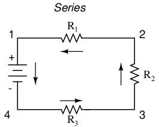
Aquí tenemos tres resistencias (etiquetadas como R1, R2y R3), conectados en una larga cadena de un terminal de la batería al otro. (Cabe señalar que el subíndice, esos pequeños números en la parte inferior derecha de la letra "R", no están relacionados con los valores de resistencia en ohmios. Sólo sirven para identificar una resistencia de otra). La característica definitoria de un circuito en serie es que solo hay un camino para que fluyan los electrones. En este circuito, los electrones fluyen en sentido antihorario, desde el punto 4 al punto 3, al punto 2, al punto 1 y de regreso al 4.
Ahora, veamos el otro tipo de circuito, una configuración en paralelo:
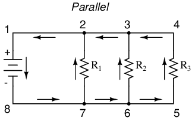
Nuevamente tenemos tres resistencias, pero esta vez forman más de un camino continuo para que fluyan los electrones. Hay un camino del 8 al 7 al 2 al 1 y de regreso al 8 nuevamente. Hay otro de 8 a 7 a 6 a 3 a 2 a 1 y de nuevo a 8. Y luego hay un tercer camino de 8 a 7 a 6 a 5 a 4 a 3 a 2 a 1 y de regreso a 8 nuevamente. Cada camino individual (a través de R1, R2y R3) se llama unrama.
La característica definitoria de un circuito en paralelo es que todos los componentes están conectados entre el mismo conjunto de puntos eléctricamente comunes. Al observar el diagrama esquemático, vemos que los puntos 1, 2, 3 y 4 son todos eléctricamente comunes. También lo son los puntos 8, 7, 6 y 5. Tenga en cuenta que todas las resistencias, así como la batería, están conectadas entre estos dos conjuntos de puntos.
Y, por supuesto, ¡la complejidad tampoco se limita a series y paralelos simples! También podemos tener circuitos que sean una combinación de serie y paralelo:
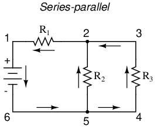
En este circuito, tenemos dos bucles por los que fluyen los electrones: uno de 6 a 5 a 2 a 1 y de nuevo a 6, y otro de 6 a 5 a 4 a 3 a 2 a 1 y de nuevo a 6. Observe cómo ambas rutas actuales pasan por R1(del punto 2 al punto 1). En esta configuración, diríamos que R2y r3están en paralelo entre sí, mientras que R1está en serie con la combinación paralela de R2y r3.
Esto es sólo un adelanto de lo que vendrá. ¡No te preocupes! Exploraremos todas estas configuraciones de circuitos en detalle, ¡una a la vez!
La idea básica de una conexión en "serie" es que los componentes están conectados de extremo a extremo en una línea para formar un camino único para que fluyan los electrones:
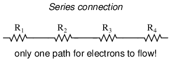
La idea básica de una conexión "paralela", por otro lado, es que todos los componentes están conectados entre sí. En un circuito puramente paralelo, nunca hay más de dos conjuntos de puntos eléctricamente comunes, sin importar cuántos componentes estén conectados. Hay muchos caminos para que fluyan los electrones, pero solo un voltaje en todos los componentes:
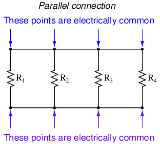
Las configuraciones de resistencias en serie y en paralelo tienen propiedades eléctricas muy diferentes. Exploraremos las propiedades de cada configuración en las secciones siguientes.
- REVISAR:
- En un circuito en serie, todos los componentes están conectados de extremo a extremo, formando un camino único para que fluyan los electrones.
- En un circuito paralelo, todos los componentes están conectados entre sí, formando exactamente dos conjuntos de puntos eléctricamente comunes.
- Una "rama" en un circuito paralelo es un camino para la corriente eléctrica formado por uno de los componentes de la carga (como una resistencia).
Simple series circuits
Comencemos con un circuito en serie que consta de tres resistencias y una sola batería:
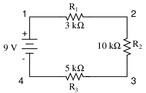
El primer principio que hay que entender acerca de los circuitos en serie es que la cantidad de corriente es la misma a través de cualquier componente del circuito. Esto se debe a que solo hay un camino para que los electrones fluyan en un circuito en serie, y debido a que los electrones libres fluyen a través de conductores como canicas en un tubo, la velocidad de flujo (velocidad de la canica) en cualquier punto del circuito (tubo) en cualquier momento específico debe ser igual.
Por la forma en que está dispuesta la batería de 9 voltios, podemos decir que los electrones en este circuito fluirán en sentido antihorario, del punto 4 al 3, al 2 al 1 y de regreso al 4. Sin embargo, tenemos una fuente de voltaje y tres resistencias. ¿Cómo utilizamos la ley de Ohm aquí?
Una advertencia importante a la Ley de Ohm es que todas las cantidades (voltaje, corriente, resistencia y potencia) deben relacionarse entre sí en términos de los mismos dos puntos de un circuito. Por ejemplo, con un circuito de una sola batería y una sola resistencia, podríamos calcular fácilmente cualquier cantidad porque todas se aplican a los mismos dos puntos del circuito:
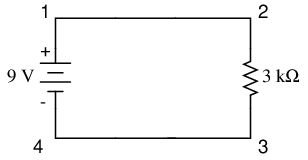
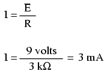
Dado que los puntos 1 y 2 están conectados entre sí con un cable de resistencia insignificante, al igual que los puntos 3 y 4, podemos decir que el punto 1 es eléctricamente común al punto 2, y que el punto 3 es eléctricamente común al punto 4. Como sabemos que tenemos 9 voltios de fuerza electromotriz entre los puntos 1 y 4 (directamente a través de la batería), y dado que el punto 2 es común al punto 1 y el punto 3 común al punto 4, también debemos tener 9 voltios entre puntos 2 y 3 (directamente a través de la resistencia). Por lo tanto, podemos aplicar la ley de Ohm (I = E/R) a la corriente que pasa por la resistencia, porque conocemos el voltaje (E) a través de la resistencia y la resistencia (R) de esa resistencia. Todos los términos (E, I, R) se aplican a los mismos dos puntos del circuito, a esa misma resistencia, por lo que podemos usar la fórmula de la Ley de Ohm sin reservas.
Sin embargo, en circuitos que contienen más de una resistencia, debemos tener cuidado al aplicar la Ley de Ohm. En el siguiente circuito de ejemplo de tres resistencias, sabemos que tenemos 9 voltios entre los puntos 1 y 4, que es la cantidad de fuerza electromotriz que intenta empujar los electrones a través de la combinación en serie de R.1, R2y R3. Sin embargo, no podemos tomar el valor de 9 voltios y dividirlo por 3k, 10k o 5k Ω para tratar de encontrar un valor de corriente, porque no sabemos cuánto voltaje hay en cada una de esas resistencias, individualmente.
La cifra de 9 voltios es unatotalcantidad para todo el circuito, mientras que las cifras de 3k, 10k y 5k Ω sonindividualcantidades para resistencias individuales. Si tuviéramos que conectar una cifra para el voltaje total en una ecuación de la Ley de Ohm con una cifra para la resistencia individual, el resultado no se relacionaría con precisión con ninguna cantidad en el circuito real.
Para R1, La ley de Ohm relacionará la cantidad de voltaje en R1con la corriente a través de R1, dado R1Resistencia de 3kΩ:
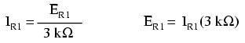
Pero, como no conocemos el voltaje en R1(solo el voltaje total suministrado por la batería a través de la combinación en serie de tres resistencias) y no conocemos la corriente a través de R1, no podemos hacer ningún cálculo con ninguna de las fórmulas. Lo mismo ocurre con R2y r3: podemos aplicar las ecuaciones de la ley de Ohm si y solo si todos los términos son representativos de sus respectivas cantidades entre los mismos dos puntos del circuito.
Entonces, ¿qué podemos hacer? Conocemos el voltaje de la fuente (9 voltios) aplicado a través de la combinación en serie de R1, R2y R3, y conocemos las resistencias de cada resistor, pero como esas cantidades no están en el mismo contexto, no podemos usar la ley de Ohm para determinar la corriente del circuito. Si tan solo supiéramos lo quetotalla resistencia era para el circuito: entonces podríamos calculartotalactual con nuestra figura paratotalvoltaje (I=E/R).
Esto nos lleva al segundo principio de los circuitos en serie: la resistencia total de cualquier circuito en serie es igual a la suma de las resistencias individuales. Esto debería tener sentido intuitivo: cuantas más resistencias en serie deban atravesar los electrones, más difícil será para esos electrones fluir. En el problema de ejemplo, teníamos una resistencia de 3 kΩ, 10 kΩ y 5 kΩ en serie, lo que nos da una resistencia total de 18 kΩ:
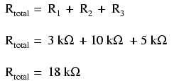
En esencia, hemos calculado la resistencia equivalente de R1, R2y R3conjunto. Sabiendo esto, podríamos volver a dibujar el circuito con una única resistencia equivalente que represente la combinación en serie de R1, R2y R3:
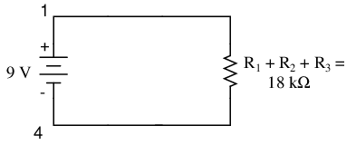
Ahora tenemos toda la información necesaria para calcular la corriente del circuito, porque tenemos el voltaje entre los puntos 1 y 4 (9 voltios) y la resistencia entre los puntos 1 y 4 (18 kΩ):
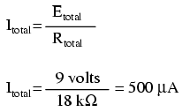
Sabiendo que la corriente es igual en todos los componentes de un circuito en serie (y acabamos de determinar la corriente a través de la batería), podemos volver a nuestro esquema de circuito original y anotar la corriente a través de cada componente:
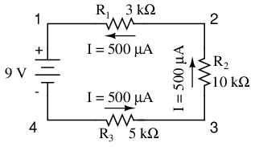
Ahora que sabemos la cantidad de corriente que pasa por cada resistencia, podemos usar la Ley de Ohm para determinar la caída de voltaje en cada una (aplicando la Ley de Ohm en su contexto adecuado):
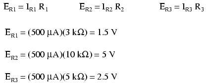
Observe las caídas de voltaje en cada resistencia y cómo la suma de las caídas de voltaje (1,5 + 5 + 2,5) es igual al voltaje de la batería (suministro): 9 voltios. Este es el tercer principio de los circuitos en serie: que la tensión de alimentación es igual a la suma de las caídas de tensión individuales.
Sin embargo, el método que acabamos de utilizar para analizar este circuito en serie simple se puede simplificar para una mejor comprensión. Al usar una tabla para enumerar todos los voltajes, corrientes y resistencias en el circuito, resulta muy fácil ver cuáles de esas cantidades se pueden relacionar adecuadamente en cualquier ecuación de la ley de Ohm:
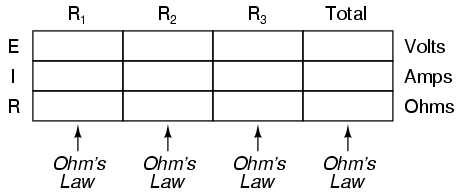
La regla con una tabla de este tipo es aplicar la ley de Ohm sólo a los valores dentro de cada columna vertical. Por ejemplo, E.R1solo con yoR1y r1; ER2solo con yoR2y r2; etc. Comienzas tu análisis rellenando aquellos elementos de la tabla que te dan desde el principio:
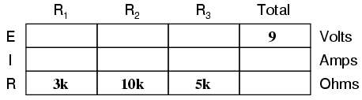
Como puede ver en la disposición de los datos, no podemos aplicar los 9 voltios de ET(tensión total) a cualquiera de las resistencias (R1, R2, o R3) en cualquier fórmula de la ley de Ohm porque están en columnas diferentes. Los 9 voltios de voltaje de la batería sonnotaplicado directamente a través de R1, R2, o R3. Sin embargo, podemos usar nuestras "reglas" de circuitos en serie para llenar espacios en blanco en una fila horizontal. En este caso, podemos usar la regla de la serie de resistencias para determinar una resistencia total a partir de lasumde resistencias individuales:
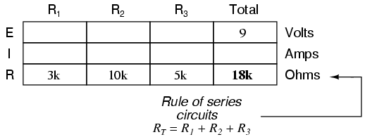
Ahora, con un valor para la resistencia total insertado en la columna de la derecha ("Total"), podemos aplicar la Ley de Ohm de I=E/R al voltaje total y a la resistencia total para llegar a una corriente total de 500 µA:
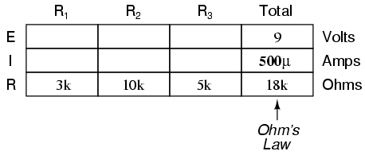
Luego, sabiendo que la corriente es compartida equitativamente por todos los componentes de un circuito en serie (otra "regla" de los circuitos en serie), podemos completar las corrientes para cada resistencia a partir de la cifra actual que acabamos de calcular:
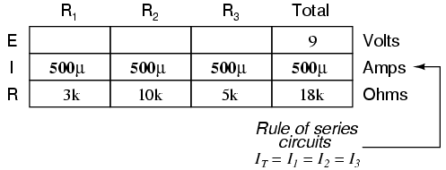
Finalmente, podemos usar la Ley de Ohm para determinar la caída de voltaje en cada resistencia, una columna a la vez:
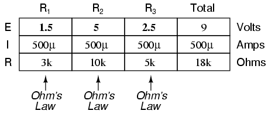
Sólo por diversión, podemos usar una computadora para analizar este mismo circuito automáticamente. Será una buena manera de verificar nuestros cálculos y también de familiarizarnos más con el análisis informático. Primero, tenemos que describir el circuito a la computadora en un formato reconocible por el software. El programa SPICE que usaremos requiere que todos los puntos eléctricamente únicos en un circuito estén numerados, y la ubicación de los componentes se entiende por cuál de esos puntos numerados, o "nodos", comparten. Para mayor claridad, numeré las cuatro esquinas de nuestro circuito de ejemplo del 1 al 4. Sin embargo, SPICE exige que haya un nodo cero en algún lugar del circuito, por lo que volveré a dibujar el circuito, cambiando ligeramente el esquema de numeración:
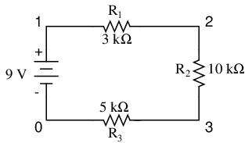
Todo lo que he hecho aquí es volver a numerar la esquina inferior izquierda del circuito como 0 en lugar de 4. Ahora, puedo ingresar varias líneas de texto en un archivo de computadora que describe el circuito en términos que SPICE pueda entender, completo con un par de líneas adicionales de código que dirigen al programa para que muestre datos de voltaje y corriente para nuestro placer visual. Este archivo informático se conoce comolista de redesen terminología ESPECIAL:
series circuit v1 1 0 r1 1 2 3k r2 2 3 10k r3 3 0 5k .dc v1 9 9 1 .print dc v(1,2) v(2,3) v(3,0) .end
Ahora, todo lo que tengo que hacer es ejecutar el programa SPICE para procesar la lista de redes y generar los resultados:
v1 v(1,2) v(2,3) v(3) i(v1) 9.000E+00 1.500E+00 5.000E+00 2.500E+00 -5.000E-04
Esta impresión nos dice que el voltaje de la batería es de 9 voltios y que el voltaje cae en R1, R2y R3son 1,5 voltios, 5 voltios y 2,5 voltios, respectivamente. Las caídas de voltaje en cualquier componente en SPICE están referenciadas por los números de nodo entre los que se encuentra el componente, por lo que v(1,2) hace referencia al voltaje entre los nodos 1 y 2 en el circuito, que son los puntos entre los cuales R1se encuentra. El orden de los números de nodo es importante: cuando SPICE genera una cifra para v(1,2), considera la polaridad de la misma manera que si estuviéramos sosteniendo un voltímetro con el cable de prueba rojo en el nodo 1 y el cable de prueba negro en el nodo 2.
También tenemos una pantalla que muestra la corriente (aunque con valor negativo) a 0,5 miliamperios o 500 microamperios. De modo que nuestro análisis matemático ha sido reivindicado por la computadora. Esta cifra aparece como un número negativo en el análisis de SPICE, debido a una peculiaridad en la forma en que SPICE maneja los cálculos actuales.
En resumen, un circuito en serie se define como aquel que tiene un solo camino para que fluyan los electrones. De esta definición se desprenden tres reglas de los circuitos en serie: todos los componentes comparten la misma corriente; las resistencias se suman para igualar una resistencia total mayor; y las caídas de voltaje se suman para igualar un voltaje total mayor. Todas estas reglas tienen su origen en la definición de un circuito en serie. Si comprende esa definición completamente, entonces las reglas no son más que notas a pie de página de la definición.
- REVISAR:
- Los componentes de un circuito en serie comparten la misma corriente: ITotal = I1 = I2= . . . In
- La resistencia total en un circuito en serie es igual a la suma de las resistencias individuales: RTotal = R1 + R2+ . . . Rn
- El voltaje total en un circuito en serie es igual a la suma de las caídas de voltaje individuales: ETotal = E1 + E2+ . . . min
Simple parallel circuits
Comencemos con un circuito en paralelo que consta de tres resistencias y una sola batería:
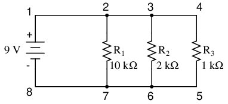
El primer principio que hay que entender sobre los circuitos en paralelo es que el voltaje es igual en todos los componentes del circuito. Esto se debe a que sólo hay dos conjuntos de puntos eléctricamente comunes en un circuito en paralelo, y el voltaje medido entre conjuntos de puntos comunes siempre debe ser el mismo en un momento dado. Por lo tanto, en el circuito anterior, el voltaje en R1es igual al voltaje en R2que es igual al voltaje en R3que es igual al voltaje en la batería. Esta igualdad de voltajes se puede representar en otra tabla para nuestros valores iniciales:
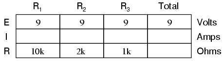
Al igual que en el caso de los circuitos en serie, se aplica la misma advertencia para la Ley de Ohm: los valores de voltaje, corriente y resistencia deben estar en el mismo contexto para que los cálculos funcionen correctamente. Sin embargo, en el circuito de ejemplo anterior, podemos aplicar inmediatamente la Ley de Ohm a cada resistencia para encontrar su corriente porque conocemos el voltaje en cada resistencia (9 voltios) y la resistencia de cada resistencia:
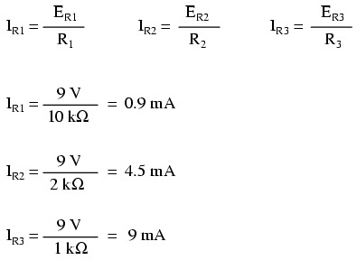
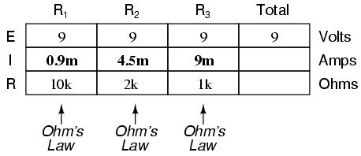
En este punto todavía no sabemos cuál es la corriente total o la resistencia total para este circuito paralelo, por lo que no podemos aplicar la ley de Ohm a la columna de la derecha ("Total"). Sin embargo, si pensamos detenidamente en lo que está sucediendo, debería resultar evidente que la corriente total debe ser igual a la suma de todas las corrientes de resistencias individuales ("ramas"):
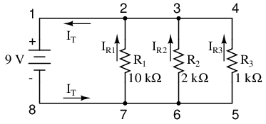
A medida que la corriente total sale del terminal negativo (-) de la batería en el punto 8 y viaja a través del circuito, parte del flujo se divide en el punto 7 para subir por R1, algo más se separa en el punto 6 para subir por R2, y el resto sube por R3. Al igual que un río que se bifurca en varios arroyos más pequeños, los caudales combinados de todos los arroyos deben ser iguales al caudal de todo el río. Lo mismo ocurre cuando las corrientes a través de R1, R2y R3unirse para fluir de regreso al terminal positivo de la batería (+) hacia el punto 1: el flujo de electrones desde el punto 2 al punto 1 debe ser igual a la suma de las corrientes (ramificadas) a través de R1, R2y R3.
Este es el segundo principio de los circuitos en paralelo: la corriente total del circuito es igual a la suma de las corrientes de las ramas individuales. Usando este principio, podemos completar el ITlugar en nuestra mesa con la suma de IR1, IR2y yoR3:
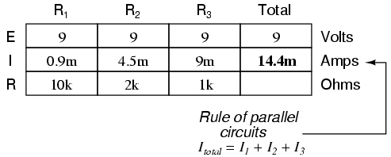
Finalmente, aplicando la Ley de Ohm a la columna de la derecha ("Total"), podemos calcular la resistencia total del circuito:
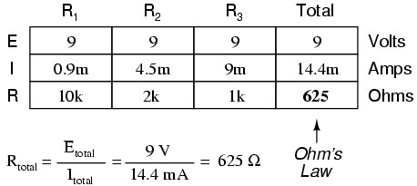
Tenga en cuenta algo muy importante aquí. La resistencia total del circuito es de sólo 625 Ω:menosque cualquiera de las resistencias individuales. En el circuito en serie, donde la resistencia total era la suma de las resistencias individuales, el total estaba obligado a sermayor queque cualquiera de las resistencias individualmente. Aquí, en el circuito paralelo, sin embargo, ocurre lo contrario: decimos que las resistencias individualesdisminuiren vez deaddpara hacer el total. Este principio completa nuestra tríada de "reglas" para circuitos en paralelo, del mismo modo que se descubrió que los circuitos en serie tienen tres reglas para voltaje, corriente y resistencia. Matemáticamente, la relación entre la resistencia total y las resistencias individuales en un circuito paralelo se ve así:
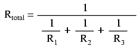
La misma forma básica de ecuación funciona paraanynúmero de resistencias conectadas entre sí en paralelo, simplemente agregue tantos términos 1/R en el denominador de la fracción como sea necesario para acomodar todas las resistencias en paralelo en el circuito.
Al igual que con el circuito en serie, podemos utilizar el análisis por computadora para verificar nuestros cálculos. Primero, por supuesto, tenemos que describir nuestro circuito de ejemplo a la computadora en términos que pueda entender. Empezaré volviendo a dibujar el circuito:
Una vez más encontramos que el esquema de numeración original utilizado para identificar puntos en el circuito tendrá que modificarse en beneficio de SPICE. En SPICE, todos los puntos eléctricamente comunes deben compartir números de nodo idénticos. Así es como SPICE sabe qué está conectado con qué y cómo. En un circuito paralelo simple, todos los puntos son eléctricamente comunes en uno de dos conjuntos de puntos. Para nuestro circuito de ejemplo, el cable que conecta la parte superior de todos los componentes tendrá un número de nodo y el cable que conecta la parte inferior de los componentes tendrá el otro. Manteniéndome fiel a la convención de incluir cero como número de nodo, elijo los números 0 y 1:
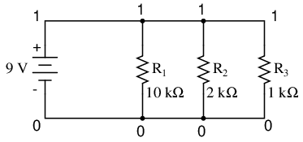
Un ejemplo como este deja bastante claro el fundamento de los números de nodos en SPICE. Al hacer que todos los componentes compartan conjuntos comunes de números, la computadora "sabe" que todos están conectados en paralelo entre sí.
Para mostrar las corrientes de rama en SPICE, necesitamos insertar fuentes de voltaje cero en línea (en serie) con cada resistencia y luego referenciar nuestras mediciones de corriente a esas fuentes. Por alguna razón, los creadores del programa SPICE hicieron que la corriente sólo pudiera calcularsea través deuna fuente de voltaje. Ésta es una exigencia algo molesta del programa de simulación SPICE. Con cada una de estas fuentes de voltaje "ficticias" agregadas, se deben crear algunos números de nodo nuevos para conectarlos a sus respectivas resistencias de rama:
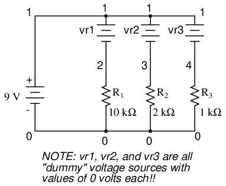
Todas las fuentes de voltaje ficticias están configuradas a 0 voltios para no tener ningún impacto en el funcionamiento del circuito. El archivo de descripción del circuito, olista de redes, se parece a esto:
Parallel circuit v1 1 0 r1 2 0 10k r2 3 0 2k r3 4 0 1k vr1 1 2 dc 0 vr2 1 3 dc 0 vr3 1 4 dc 0 .dc v1 9 9 1 .print dc v(2,0) v(3,0) v(4,0) .print dc i(vr1) i(vr2) i(vr3) .end
Al ejecutar el análisis por computadora, obtenemos estos resultados (he anotado la copia impresa con etiquetas descriptivas):
v1 v(2) v(3) v(4) 9.000E+00 9.000E+00 9.000E+00 9.000E+00 battery R1 voltage R2 voltage R3 voltage voltage
v1 i(vr1) i(vr2) i(vr3) 9.000E+00 9.000E-04 4.500E-03 9.000E-03 battery R1 current R2 current R3 current voltage
De hecho, estos valores coinciden con los calculados anteriormente mediante la ley de Ohm: 0,9 mA para IR1, 4,5 mA para yoR2y 9 mA para IR3. Al estar conectadas en paralelo, por supuesto, todas las resistencias tienen la misma caída de voltaje (9 voltios, igual que la batería).
En resumen, un circuito en paralelo se define como aquel en el que todos los componentes están conectados entre el mismo conjunto de puntos eléctricamente comunes. Otra forma de decir esto es que todos los componentes están conectados entre sí a través de sus terminales. De esta definición se desprenden tres reglas de los circuitos en paralelo: todos los componentes comparten el mismo voltaje; las resistencias disminuyen para igualar una resistencia total más pequeña; y las corrientes derivadas se suman para igualar una corriente total mayor. Al igual que en el caso de los circuitos en serie, todas estas reglas tienen su origen en la definición de un circuito en paralelo. Si comprende esa definición completamente, entonces las reglas no son más que notas a pie de página de la definición.
- REVISAR:
- Los componentes en un circuito paralelo comparten el mismo voltaje: ETotal = E1 = E2= . . . min
- La resistencia total en un circuito paralelo esmenosque cualquiera de las resistencias individuales: RTotal= 1 / (1/R1+ 1/R2+ . . . 1/Rn)
- La corriente total en un circuito en paralelo es igual a la suma de las corrientes de las ramas individuales: ITotal = I1 + I2+ . . . In.
Conductance
Cuando los estudiantes ven por primera vez la ecuación de resistencia paralela, la pregunta natural que se hacen es: "¿Dónde apareció?".eso¿De dónde viene?" Es realmente una pieza extraña de aritmética, y su origen merece una buena explicación.
La resistencia, por definición, es la medida defricciónun componente se presenta al flujo de electrones a través de él. La resistencia está simbolizada por la letra mayúscula "R" y se mide en la unidad "ohmio". Sin embargo, también podemos pensar en esta propiedad eléctrica en términos de su inversa: ¿cómofáciles que los electrones fluyan a través de un componente, en lugar de cómodifícil. Siresistenciaes la palabra que usamos para simbolizar la medida de lo difícil que es para los electrones fluir, entonces una buena palabra para expresar lo fácil que es para los electrones fluir seríaconductancia.
Matemáticamente, la conductancia es la recíproca o inversa de la resistencia:
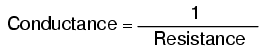
Cuanto mayor es la resistencia, menor es la conductancia y viceversa. Esto debería tener sentido intuitivo, ya que la resistencia y la conductancia son formas opuestas de denotar la misma propiedad eléctrica esencial. Si se comparan las resistencias de dos componentes y se encuentra que el componente "A" tiene la mitad de la resistencia del componente "B", entonces, alternativamente, podríamos expresar esta relación diciendo que el componente "A" esdos vecestan conductor como el componente "B". Si el componente "A" tiene sólo un tercio de la resistencia del componente "B", entonces podríamos decir que estres vecesmás conductor que el componente "B", y así sucesivamente.
Llevando esta idea más allá, se crearon un símbolo y una unidad para representar la conductancia. El símbolo es la letra "G" mayúscula y la unidad es lamho, que es "ohm" escrito al revés (¡y no creías que los ingenieros electrónicos tuvieran sentido del humor!). A pesar de su idoneidad, la unidad de mho fue reemplazada en años posteriores por la unidad desiemens(abreviado con la letra mayúscula "S"). Esta decisión de cambiar los nombres de las unidades recuerda el cambio de la unidad de temperatura en grados.Centígradoa gradosCelsius, o el cambio de la unidad de frecuenciac.p.s.(ciclos por segundo) ahercios. Si está buscando un patrón aquí, Siemens, Celsius y Hertz son apellidos de científicos famosos, cuyos nombres, lamentablemente, nos dicen menos sobre la naturaleza de las unidades que las designaciones originales de las unidades.
Como nota a pie de página, la unidad siemens nunca se expresa sin la última letra "s". En otras palabras, no existe una unidad de "siemen" como la que existe en el caso del "ohm" o el "mho". La razón de esto es la correcta ortografía de los apellidos de los respectivos científicos. La unidad de resistencia eléctrica recibió el nombre de alguien llamado "Ohm", mientras que la unidad de conductancia eléctrica recibió el nombre de alguien llamado "Siemens", por lo que sería incorrecto "singularizar" esta última unidad ya que su "s" final no denota pluralidad.
Volviendo a nuestro ejemplo de circuito paralelo, deberíamos poder ver que múltiples caminos (ramificaciones) para la corriente reducen la resistencia total de todo el circuito, ya que los electrones pueden fluir más fácilmente a través de toda la red de múltiples ramas que a través de cualquiera de esas resistencias de rama sola. En términos deresistencia, las ramas adicionales dan como resultado un total menor (la corriente encuentra menos oposición). En términos deconductancia, sin embargo, ramas adicionales dan como resultado un total mayor (los electrones fluyen con mayor conductancia):
La resistencia paralela total esmenosque cualquiera de las resistencias de las ramas individuales porque las resistencias en paralelo resisten menos juntas que por separado:
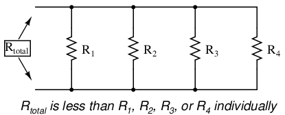
La conductancia paralela total esmayor queque cualquiera de las conductancias de las ramas individuales porque las resistencias paralelas conducen mejor juntas que por separado:
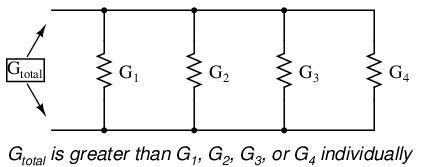
Para ser más precisos, la conductancia total en un circuito en paralelo es igual a la suma de las conductancias individuales:
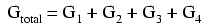
Si sabemos que la conductancia no es más que el recíproco matemático (1/x) de la resistencia, podemos traducir cada término de la fórmula anterior en resistencia sustituyendo el recíproco de cada conductancia respectiva:
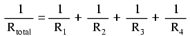
Resolviendo la ecuación anterior para la resistencia total (en lugar del recíproco de la resistencia total), podemos invertir (reciprocar) ambos lados de la ecuación:
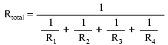
¡Así que por fin llegamos a nuestra críptica fórmula de resistencia! La conductancia (G) rara vez se utiliza como medida práctica, por lo que la fórmula anterior es común en el análisis de circuitos paralelos.
- REVISAR:
- La conductancia es lo opuesto a la resistencia: la medida de cómofáciles que los electrones fluyan a través de algo.
- La conductancia se simboliza con la letra "G" y se mide en unidades demhos or siemens.
- Matemáticamente, la conductancia es igual al recíproco de la resistencia: G = 1/R
Power calculations
Al calcular la disipación de potencia de componentes resistivos, utilice cualquiera de las tres ecuaciones de potencia para derivar la respuesta a partir de valores de voltaje, corriente y/o resistencia pertenecientes a cada componente:

Esto se gestiona fácilmente añadiendo otra fila a nuestra conocida tabla de voltajes, corrientes y resistencias:
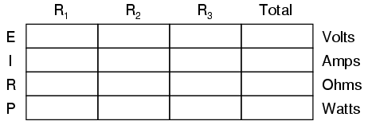
La potencia para cualquier columna de la tabla en particular se puede encontrar mediante la ecuación apropiada de la ley de Ohm (adecuadobasado en las cifras que están presentes para E, I y R en esa columna).
Una regla interesante para el poder total versus el poder individual es que es aditivo paraanyConfiguración del circuito: serie, paralelo, serie/paralelo, u otra. El poder es una medida de la tasa de trabajo, y dado que el poder se disipódebeigual a la potencia total aplicada por la(s) fuente(s) (según la Ley de Conservación de Energía en física), la configuración del circuito no tiene ningún efecto en las matemáticas.
- REVISAR:
- El poder es aditivo enanyconfiguración del circuito resistivo: PTotal = P1 + P2+ . . . PAGn
Correct use of Ohm's Law
Uno de los errores más comunes que cometen los estudiantes principiantes de electrónica en la aplicación de las leyes de Ohm es mezclar los contextos de voltaje, corriente y resistencia. En otras palabras, un estudiante podría usar erróneamente un valor de I a través de una resistencia y el valor de E a través de un conjunto de resistencias interconectadas, pensando que llegará a la resistencia de esa resistencia. ¡No es así! Recuerde esta importante regla: las variables utilizadas en las ecuaciones de la ley de Ohm deben sercomúna los mismos dos puntos del circuito considerado. No puedo dejar de enfatizar esta regla. Esto es especialmente importante en circuitos combinados en serie-paralelo donde los componentes cercanos pueden tener diferentes valores tanto para la caída de voltaje como para la caída de voltaje.andactual.
Cuando utilice la Ley de Ohm para calcular una variable perteneciente a un solo componente, asegúrese de que el voltaje al que está haciendo referencia sea únicamente a través de ese único componente y que la corriente a la que está haciendo referencia sea únicamente a través de ese único componente y que la resistencia a la que está haciendo referencia es únicamente para ese único componente. Del mismo modo, al calcular una variable perteneciente a un conjunto de componentes en un circuito, asegúrese de que los valores de voltaje, corriente y resistencia sean específicos de ese conjunto completo de componentes únicamente. Una buena forma de recordar esto es prestar mucha atención ados puntosterminar el componente o conjunto de componentes que se están analizando, asegurándose de que el voltaje en cuestión esté en esos dos puntos, que la corriente en cuestión sea el flujo de electrones desde uno de esos puntos hasta el otro punto, que la resistencia en cuestión sea el equivalente a una sola resistencia entre esos dos puntos, y que la potencia en cuestión sea la potencia total disipada por todos los componentes entre esos dos puntos.
El método de "tabla" presentado en este capítulo para circuitos en serie y en paralelo es una buena manera de mantener correcto el contexto de la ley de Ohm para cualquier tipo de configuración de circuito. En una tabla como la que se muestra a continuación, sólo se le permite aplicar una ecuación de la Ley de Ohm para los valores de un soloverticalcolumna a la vez:
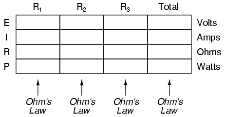
Derivando valoreshorizontalmentea través de columnas está permitido según los principios de circuitos en serie y paralelo:
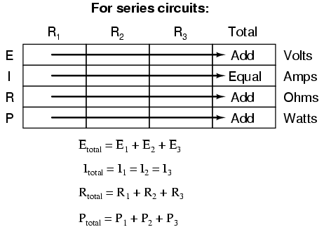
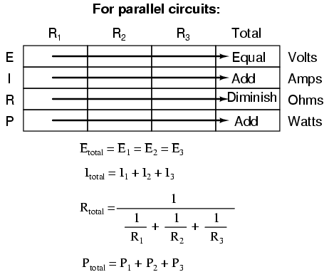
El método de "tabla" no solo simplifica la gestión de todas las cantidades relevantes, sino que también facilita la verificación cruzada de las respuestas al facilitar la resolución de las variables desconocidas originales a través de otros métodos, o al trabajar hacia atrás para resolver los valores dados inicialmente a partir de sus soluciones. Por ejemplo, si acaba de resolver todos los voltajes, corrientes y resistencias desconocidos en un circuito, puede verificar su trabajo agregando una fila en la parte inferior para los cálculos de potencia en cada resistencia, viendo si todos los valores de potencia individuales suman o no la potencia total. Si no es así, ¡debes haber cometido un error en alguna parte! Si bien esta técnica de "verificar" su trabajo no es nada nuevo, usar la tabla para organizar todos los datos para las verificaciones cruzadas genera un mínimo de confusión.
- REVISAR:
- Aplique la ley de Ohm a las columnas verticales de la tabla.
- Aplique reglas de serie/paralelo a las filas horizontales de la tabla.
- Verifique sus cálculos trabajando "hacia atrás" para intentar llegar a los valores dados originalmente (a partir de sus primeras respuestas calculadas), o resolviendo una cantidad usando más de un método (a partir de diferentes valores dados).
Component failure analysis
El trabajo de un técnico frecuentemente implica "solucionar problemas" (localizar y corregir un problema) en circuitos que funcionan mal. Una buena resolución de problemas es un esfuerzo exigente y gratificante, que requiere una comprensión profunda de los conceptos básicos, la capacidad de formular hipótesis (explicaciones propuestas de un efecto), la capacidad de juzgar el valor de diferentes hipótesis en función de su probabilidad (qué tan probable puede ser una causa particular sobre otra) y un sentido de creatividad al aplicar una solución para rectificar el problema. Si bien es posible sintetizar estas habilidades en una metodología científica, la mayoría de los solucionadores de problemas experimentados estarían de acuerdo en que la resolución de problemas implica un toque de arte y que puede llevar años de experiencia desarrollar completamente este arte.
Una habilidad esencial es una comprensión rápida e intuitiva de cómo las fallas de los componentes afectan los circuitos en diferentes configuraciones. Exploraremos algunos de los efectos de las fallas de componentes tanto en circuitos en serie como en paralelo aquí y luego, en mayor medida, al final del capítulo "Circuitos combinados en serie-paralelo".
Comencemos con un circuito en serie simple:
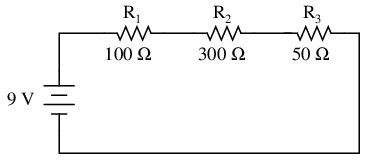
Con todos los componentes de este circuito funcionando en sus valores adecuados, podemos determinar matemáticamente todas las corrientes y caídas de voltaje:
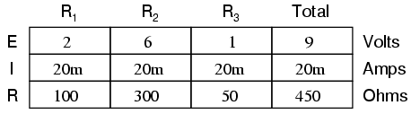
Ahora supongamos que R2falla en cortocircuito.en cortosignifica que la resistencia ahora actúa como un trozo de cable recto, con poca o ninguna resistencia. El circuito se comportará como si un cable "puente" estuviera conectado a través de R2(En caso de que se lo pregunte, "cable de puente" es un término común para una conexión de cable temporal en un circuito). ¿Qué causa la condición de cortocircuito de R?2No nos importa en este ejemplo; Sólo nos importa su efecto sobre el circuito:
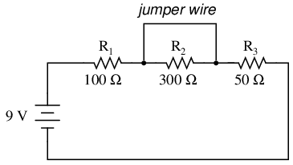
con r2cortocircuito, ya sea por un cable de puente o por una falla de resistencia interna, la resistencia total del circuito disminuirá.disminuir. Dado que el voltaje de salida de la batería es constante (al menos en nuestra simulación ideal aquí), una disminución en la resistencia total del circuito significa que la corriente total del circuitodebe aumentar:
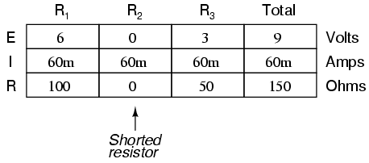
A medida que la corriente del circuito aumenta de 20 miliamperios a 60 miliamperios, el voltaje cae en R1y r3(que no han cambiado las resistencias) también aumentan, de modo que las dos resistencias caen los 9 voltios completos. R2, al ser anulado por la muy baja resistencia del cable puente, se elimina efectivamente del circuito, habiéndose reducido a cero la resistencia de un cable al otro. Por lo tanto, la caída de voltaje en R2, incluso con el aumento de la corriente total, es cero voltios.
Por otro lado, si R2Si fallara "abierto" (la resistencia aumentaría a niveles casi infinitos) también crearía efectos de amplio alcance en el resto del circuito:
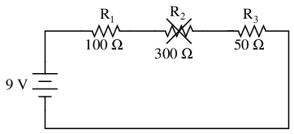
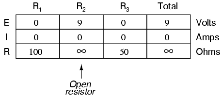
con r2Cuando la resistencia infinita y la resistencia total son la suma de todas las resistencias individuales en un circuito en serie, la corriente total disminuye a cero. Con corriente de circuito cero, no hay flujo de electrones que produzca caídas de voltaje en R1o R3. R2, por otro lado, manifestará el voltaje de suministro total a través de sus terminales.
También podemos aplicar la misma técnica de análisis antes/después a circuitos paralelos. Primero, determinamos cómo debería comportarse un circuito paralelo "saludable".
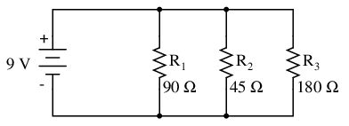
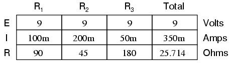
Suponiendo que R2se abre en este circuito paralelo, estos son los efectos:
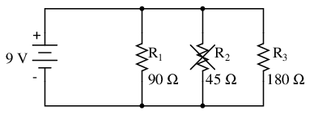
Observe que en este circuito paralelo, una rama abierta solo afecta la corriente que pasa por esa rama y la corriente total del circuito. El voltaje total, que se comparte por igual entre todos los componentes de un circuito en paralelo, será el mismo para todas las resistencias. Debido al hecho de que la tendencia de la fuente de voltaje es mantener el voltajeconstante, su voltaje no cambiará, y al estar en paralelo con todas las resistencias, mantendrá todos los voltajes de las resistencias igual que antes: 9 voltios. Dado que el voltaje es el único parámetro común en un circuito paralelo y las otras resistencias no han cambiado el valor de resistencia, sus respectivas corrientes de rama permanecen sin cambios.
Esto es lo que sucede en un circuito de lámparas domésticas: todas las lámparas obtienen su tensión de funcionamiento a través de cables de alimentación dispuestos en paralelo. Encender y apagar una lámpara (una rama en ese circuito paralelo cerrándose y abriéndose) no afecta el funcionamiento de otras lámparas en la habitación, solo la corriente en esa lámpara (circuito ramal) y la corriente total que alimenta todas las lámparas en la habitación:
En un caso ideal (con fuentes de voltaje perfectas y un cable de conexión de resistencia cero), las resistencias en cortocircuito en un circuito paralelo simple tampoco tendrán ningún efecto sobre lo que sucede en otras ramas del circuito. En la vida real, el efecto no es exactamente el mismo y veremos por qué en el siguiente ejemplo:
En teoría, una resistencia en cortocircuito (resistencia de 0 Ω) consumiría una corriente infinita de cualquier fuente finita de voltaje (I=E/0). En este caso, la resistencia cero de R2También disminuye la resistencia total del circuito a cero Ω, aumentando la corriente total a un valor infinito. Sin embargo, mientras la fuente de voltaje se mantenga estable a 9 voltios, las otras corrientes derivadas (IR1y yoR3) permanecerá sin cambios.
Sin embargo, la suposición crítica en este esquema "perfecto" es que el suministro de voltaje se mantendrá estable en su voltaje nominal mientras suministra una cantidad infinita de corriente a una carga de cortocircuito. Esto simplemente no es realista. Incluso si el corto tiene una pequeña cantidad de resistencia (a diferencia de una resistencia absolutamente nula), norealLa fuente de voltaje podría suministrar arbitrariamente una enorme corriente de sobrecarga y mantener un voltaje constante al mismo tiempo. Esto se debe principalmente a la resistencia interna intrínseca a todas las fuentes de energía eléctrica, derivada de las propiedades físicas ineludibles de los materiales con los que están construidas:
Estas resistencias internas, por pequeñas que sean, convierten nuestro circuito paralelo simple en un circuito combinado en serie-paralelo. Por lo general, las resistencias internas de las fuentes de voltaje son lo suficientemente bajas como para poder ignorarlas con seguridad, pero cuando se encuentran corrientes altas resultantes de componentes en cortocircuito, sus efectos se vuelven muy notables. En este caso, un R en cortocircuito2daría como resultado que casi todo el voltaje caiga a través de la resistencia interna de la batería, y casi no quede voltaje para las resistencias R1, R2y R3:
Basta decir que los cortocircuitos directos intencionales entre los terminales de cualquier fuente de voltaje son una mala idea. Incluso si la alta corriente resultante (calor, destellos, chispas) no causa daño a las personas cercanas, es probable que la fuente de voltaje sufra daños, a menos que haya sido diseñada específicamente para soportar cortocircuitos, lo que la mayoría de las fuentes de voltaje no lo son.
Finalmente, en este libro lo guiaré a través del análisis de circuitos.sin el uso de ningún número, es decir, analizar los efectos de la falla de un componente en un circuito sin saber exactamente cuántos voltios produce la batería, cuántos ohmios de resistencia hay en cada resistor, etc. Esta sección sirve como un paso introductorio a ese tipo de análisis.
Considerando que la aplicación normal de la Ley de Ohm y las reglas de circuitos en serie y paralelo se realiza con cantidades numéricas ("cuantitativo"), este nuevo tipo de análisis sin cifras numéricas precisas es algo que me gusta llamarcualitativoanálisis. En otras palabras, estaremos analizando lacualidadesde los efectos en un circuito en lugar de la precisióncantidades. El resultado, para usted, será una comprensión intuitiva mucho más profunda del funcionamiento de los circuitos eléctricos.
- REVISAR:
- Para determinar qué sucedería en un circuito si falla un componente, vuelva a dibujar ese circuito con la resistencia equivalente del componente fallido en su lugar y vuelva a calcular todos los valores.
- La capacidad de determinar intuitivamente qué sucederá con un circuito con cualquier falla en un componente determinado es unacrucialHabilidad que debe desarrollar cualquier solucionador de problemas electrónicos. La mejor manera de aprender es experimentar con cálculos de circuitos y circuitos de la vida real, prestando mucha atención a qué cambia con una falla, qué permanece igual y quéwhy!
- A en cortocomponente es aquel cuya resistencia ha disminuido dramáticamente.
- An abiertocomponente es aquel cuya resistencia ha aumentado dramáticamente. Para que conste, las resistencias tienden a fallar al abrirse con más frecuencia que a fallar en cortocircuito, y casi nunca fallan a menos que se esfuercen física o eléctricamente (maltratadas físicamente o sobrecalentadas).
Building simple resistor circuits
Mientras aprende sobre electricidad, querrá construir sus propios circuitos usando resistencias y baterías. Hay algunas opciones disponibles en este asunto del ensamblaje de circuitos, algunas más fáciles que otras. En esta sección, exploraré un par de técnicas de fabricación que no sólo le ayudarán a construir los circuitos que se muestran en este capítulo, sino también circuitos más avanzados.
Si todo lo que deseamos construir es un circuito simple de una sola batería y una sola resistencia, podemos usar fácilmentepinza de cocodrilocables de puente como este:
Los cables de puente con clips de resorte estilo "cocodrilo" en cada extremo proporcionan un método seguro y conveniente para unir componentes eléctricamente.
Si quisiéramos construir un circuito en serie simple con una batería y tres resistencias, se podría aplicar la misma técnica de construcción "punto a punto" usando cables de puente:
Esta técnica, sin embargo, resulta poco práctica para circuitos mucho más complejos que este, debido a la torpeza de los cables de puente y la fragilidad física de sus conexiones. Un método más común de construcción temporal para el aficionado es elplaca sin soldadura, un dispositivo hecho de plástico con cientos de enchufes de conexión con resorte que unen los extremos insertados de componentes y/o piezas de alambre sólido de calibre 22. Aquí se muestra una fotografía de una placa de pruebas real, seguida de una ilustración que muestra un circuito en serie simple construido sobre una:
Debajo de cada orificio en la cara de la placa de pruebas hay un clip de resorte de metal, diseñado para sujetar cualquier cable o componente insertado. Estos clips de resorte de metal se unen debajo de la cara de la placa de pruebas, haciendo conexiones entre los cables insertados. El patrón de conexión se une cada cinco orificios a lo largo de una columna vertical (como se muestra con el eje largo de la placa situado horizontalmente):
Por lo tanto, cuando se inserta un cable o cable de componente en un orificio de la placa de pruebas, hay cuatro orificios más en esa columna que proporcionan puntos de conexión potenciales a otros cables y/o cables de componentes. El resultado es una plataforma extremadamente flexible para construir circuitos temporales. Por ejemplo, el circuito de tres resistencias que se acaba de mostrar también podría construirse en una placa como esta:
Un circuito paralelo también es fácil de construir en una placa sin soldadura:
Sin embargo, las placas de pruebas tienen sus limitaciones. En primer lugar, están destinados atemporariosólo construcción. Si toma una placa de pruebas, la pone boca abajo y la sacude, todos los componentes conectados a ella seguramente se aflojarán y podrían caerse de sus respectivos orificios. Además, las placas de pruebas están limitadas a circuitos de corriente bastante baja (menos de 1 amperio). Esas pinzas de resorte tienen un área de contacto pequeña y, por lo tanto, no pueden soportar corrientes elevadas sin un calentamiento excesivo.
Para una mayor permanencia, es posible que desee elegir soldar o enrollar alambre. Estas técnicas implican sujetar los componentes y los cables a alguna estructura que proporcione una ubicación mecánica segura (como una placa fenólica o de fibra de vidrio con orificios perforados, muy parecida a una placa de pruebas sin las conexiones intrínsecas de clip de resorte) y luego conectar los cables a los cables de los componentes asegurados. La soldadura es una forma de soldadura a baja temperatura, que utiliza una aleación de estaño/plomo o estaño/plata que se funde y une eléctricamente objetos de cobre. Los extremos de los cables soldados a los cables de los componentes o a pequeñas "almohadillas" de anillos de cobre unidas a la superficie de la placa de circuito sirven para conectar los componentes entre sí. En la envoltura de cables, un cable de pequeño calibre se enrolla firmemente alrededor de los cables de los componentes en lugar de soldarse a los cables o a las almohadillas de cobre; la tensión del cable enrollado proporciona una unión mecánica y eléctrica sólida para conectar los componentes entre sí.
Un ejemplo de unplaca de circuito impreso, oPCB, destinado a uso aficionado se muestra en esta fotografía:

Esta placa aparece con el lado del cobre hacia arriba: el lado donde se realiza toda la soldadura. Cada orificio está rodeado con una pequeña capa de metal de cobre para unirlo a la soldadura. Todos los agujeros son independientes entre sí en esta placa en particular, a diferencia de los agujeros en una placa sin soldadura que están conectados entre sí en grupos de cinco. Sin embargo, se pueden comprar y utilizar placas de circuito impreso con el mismo patrón de conexión de 5 orificios que las placas de pruebas para la construcción de circuitos de hobby.
Las placas de circuito impreso de producción tienenrastrosde cobre colocado sobre el material de sustrato fenólico o de fibra de vidrio para formar vías de conexión prediseñadas que funcionan como cables en un circuito. Aquí se muestra un ejemplo de dicha placa; esta unidad en realidad es un circuito de "fuente de alimentación" diseñado para tomar corriente alterna (CA) de 120 voltios de un enchufe de pared doméstico y transformarla en corriente continua (CC) de bajo voltaje. Aparece una resistencia en este tablero, el quinto componente contando desde abajo, ubicado en el área central derecha del tablero.
Una vista de la parte inferior de esta placa revela los "rastros" de cobre que conectan los componentes entre sí, así como los depósitos de soldadura de color plateado que unen los componentes que conducen a esos rastros:
Un circuito soldado o envuelto con cables se considera permanente: es decir, es poco probable que se desmorone accidentalmente. Sin embargo, estas técnicas de construcción a veces se considerantoopermanente. Si alguien desea reemplazar un componente o cambiar el circuito de manera sustancial, debe invertir una buena cantidad de tiempo deshaciendo las conexiones. Además, tanto soldar como enrollar cables requieren herramientas especializadas que pueden no estar disponibles de inmediato.
Una técnica de construcción alternativa utilizada en todo el mundo industrial es la de laregleta de terminales. Regletas de terminales, también llamadastiras de barrera or bloques de terminales, se componen de un trozo de material no conductor con varias barras pequeñas de metal incrustadas en su interior. Cada barra de metal tiene al menos un tornillo de máquina u otro sujetador debajo del cual se puede asegurar un cable o componente. Varios cables sujetos por un tornillo se hacen eléctricamente comunes entre sí, al igual que los cables sujetos a múltiples tornillos en la misma barra. La siguiente fotografía muestra un estilo de regleta de terminales, con algunos cables conectados.
En la siguiente fotografía se muestra otra regleta de terminales más pequeña. Este tipo, a veces denominado estilo "europeo", tiene tornillos empotrados para ayudar a evitar cortocircuitos accidentales entre terminales provocados por un destornillador u otro objeto metálico:
En la siguiente ilustración, se muestra un circuito de tres resistencias y una sola batería construido sobre una regleta de terminales:
Si la regleta de terminales utiliza tornillos para metales para sujetar los componentes y los extremos de los cables, no se necesita nada más que un destornillador para asegurar conexiones nuevas o romper conexiones antiguas. Algunas regletas de terminales utilizan clips con resorte, similares a los de una placa de pruebas, excepto por su mayor robustez, que se enganchan y desenganchan usando un destornillador como herramienta de empuje (sin necesidad de girar). Las conexiones eléctricas que se establecen mediante una regleta de terminales son bastante robustas y se consideran aptas tanto para construcciones permanentes como temporales.
Una de las habilidades esenciales para cualquier persona interesada en la electricidad y la electrónica es poder "traducir" un diagrama esquemático a un diseño de circuito real donde los componentes pueden no estar orientados de la misma manera. Los diagramas esquemáticos generalmente se dibujan para una máxima legibilidad (¡excepto esos pocos ejemplos notables esbozados para crear la máxima confusión!), pero la construcción práctica de circuitos a menudo exige una orientación diferente de los componentes. Construir circuitos simples en regletas de terminales es una forma de desarrollar la habilidad de razonamiento espacial de "estirar" cables para hacer las mismas rutas de conexión. Considere el caso de un circuito en paralelo de tres resistencias y una sola batería construido sobre una regleta de terminales:
Pasar de un diagrama esquemático bonito y ordenado al circuito real, especialmente cuando las resistencias que se van a conectar están dispuestas físicamente en unalinealLa moda en la regleta de terminales no es obvia para muchos, por lo que describiré el proceso paso a paso. Primero, comience con el diagrama esquemático limpio y todos los componentes asegurados a la regleta de terminales, sin cables de conexión:
Luego, rastrea la conexión del cable desde un lado de la batería hasta el primer componente en el esquema, asegurando un cable de conexión entre los mismos dos puntos en el circuito real. Me resulta útil sobredibujar el cable del esquema con otra línea para indicar qué conexiones he hecho en la vida real:
Continúe este proceso, cable por cable, hasta que se hayan tenido en cuenta todas las conexiones en el diagrama esquemático. Podría ser útil considerar los cables comunes al estilo SPICE: haga todas las conexiones a un cable común en el circuito como un solo paso, asegurándose de que todos y cada uno de los componentes con una conexión a ese cable realmente tengan una conexión a ese cable antes de continuar con el siguiente. Para el siguiente paso, mostraré cómo se conectan los lados superiores de las dos resistencias restantes, siendo comunes con el cable asegurado en el paso anterior:
Con los lados superiores de todas las resistencias (como se muestra en el esquema) conectados entre sí y al terminal positivo (+) de la batería, todo lo que tenemos que hacer ahora es conectar los lados inferiores entre sí y al otro lado de la batería:
Normalmente, en la industria, todos los cables están etiquetados con etiquetas numéricas y los cables eléctricamente comunes llevan el mismo número de etiqueta, tal como lo hacen en una simulación SPICE. En este caso, podríamos etiquetar los cables 1 y 2:
Otra convención industrial es modificar ligeramente el diagrama esquemático para indicar los puntos reales de conexión de cables en la regleta de terminales. Esto exige un sistema de etiquetado para la propia tira: un número "TB" (número de bloque de terminales) para la tira, seguido de otro número que represente cada barra metálica de la tira.
De esta manera, el esquema se puede utilizar como un "mapa" para localizar puntos en un circuito real, independientemente de cuán enredado y complejo pueda parecer a la vista el cableado de conexión. Esto puede parecer excesivo para el circuito simple de tres resistencias que se muestra aquí, pero ese detalle es absolutamente necesario para la construcción y mantenimiento de circuitos grandes, especialmente cuando esos circuitos pueden abarcar una gran distancia física, utilizando más de una regleta de terminales ubicada en más de un panel o caja.
- REVISAR:
- A placa sin soldaduraes un dispositivo que se utiliza para ensamblar rápidamente circuitos temporales conectando cables y componentes en clips de resorte eléctricamente comunes dispuestos debajo de filas de orificios en un tablero de plástico.
- SoldaduraEs un proceso de soldadura a baja temperatura que utiliza una aleación de plomo/estaño o estaño/plata para unir cables y componentes, generalmente con los componentes asegurados a una placa de fibra de vidrio.
- Envoltura de alambrees una alternativa a la soldadura, que implica un cable de pequeño calibre enrollado firmemente alrededor de los cables de los componentes en lugar de una unión soldada para conectar los componentes entre sí.
- A regleta de terminales, también conocido comotira de barrera or bloque de terminalesEs otro dispositivo que se utiliza para montar componentes y cables para construir circuitos. Los terminales de tornillo o clips de resorte pesados unidos a barras de metal proporcionan puntos de conexión para los extremos de los cables y los cables de los componentes; estas barras de metal se montan por separado en una pieza de material no conductor como plástico, baquelita o cerámica.
Contributors
Los contribuyentes a este capítulo se enumeran en orden cronológico de sus contribuciones, desde el más reciente hasta el primero. Consulte el Apéndice 2 (Lista de colaboradores) para fechas e información de contacto.
Jason Stark(Junio de 2000): Formato de documentos HTML, que dio lugar a una segunda edición mucho más atractiva.
Ron La Plante(Octubre de 1998): ayudó a crear un método de "tabla" para el análisis de circuitos en serie y en paralelo.
Lecciones en circuitos eléctricoscopyright (C) 2000-2023 Tony R. Kuphaldt, según los términos y condiciones delCC BY License.